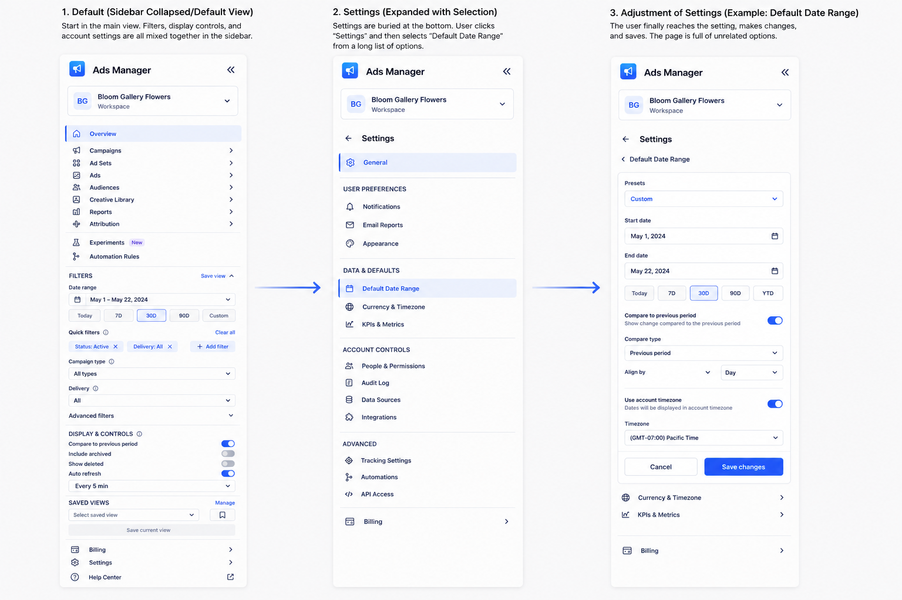
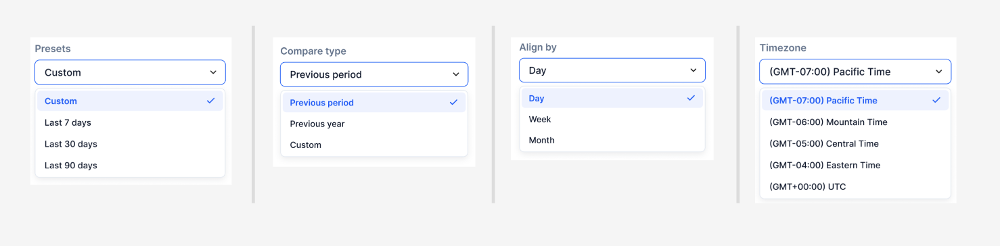

<!DOCTYPE html>
<html></html>
    <head>
        <meta charset="utf-8">
        <meta http-equiv="X-UA-Compatible" content="IE=edge">
        <meta name="viewport" content="width=device-width"/>
        <title>Peter An-Designer</title>
        <link rel="stylesheet" href="infra.css">
        <link rel="stylesheet" href="../owl-carousel/owl.carousel.css">
        <link rel="stylesheet" href="../owl-carousel/owl.theme.css">
    </head>

    <body>
            <header class="head">
           <a href="../index.html"><h5>pete rivers-an • design + product</h5></a>
            <!-- <h5 class="end"><a href="archive.html">Archive</a></h5> -->
        </header>

        <div class="container">
        <div id="owl-demo" class="owl-carousel owl-theme">
            <div class="item"></div>
           
<!--
            <div class="item">
            </div>
-->

</div>

            <div class="text">
        <div class="descript">
            <p><b>PROJECT OVERVIEW:</b> This project explores how to simplify a complex internal ads management tool while preserving the flexibility power users need. As the platform grew, navigation, filters, and settings became increasingly dense and difficult to distinguish. I redesigned the experience around clearer hierarchy, progressive disclosure, and more predictable configuration flows. The result is a more scalable system that makes complex workflows easier to understand and manage.</p>
        </div>
        <div class="info">
        <p><span>Project Name : META Ads Infra Side Bar</span></p>
             <p><span>Type : Infra UX & Product Design</span></p>
             <p><span>Tools Used : Figma, Figjam, Miro</span></p>
            </div>
        </div>

<section class="">
<div>
    <h2>Problem</h2>
    <p>As the platform grew, navigation, filters, and persistent settings began competing for space within the same interface. The challenge was not to remove complexity, but to organize it more effectively. This created three key challenges:
        <div>
        <ul>• High information density made important controls harder to scan.</ul>
        <ul>• Navigation and filters lacked a clear separation.</ul>
        <ul>• Temporary filters and persistent settings behaved similarly, making their impact unclear.</ul>
        </div>

    </p>
</div>
<div>
    <h2>Observations</h2>
    <p>Internal users often perform repetitive, high-frequency tasks and need immediate access to advanced controls. Moving everything behind menus would make the interface cleaner, but potentially slower to use.

Instead, I organized the experience around three questions:

Navigate — Where am I working?
Filter — What information do I need right now?
Configure — How should the tool behave by default?

This framework helped establish a clearer hierarchy while keeping important controls accessible.</p>
</div>
<div class="body-img">

</div>

<div>
    <h2>Tasks & Actions</h2>
    <p>
        <h4>01. Restructure the sidebar</h4>

I separated the sidebar into clear functional groups: primary navigation, advanced tools, contextual filters, saved views, and account controls.

Frequently used destinations remain immediately accessible, while specialized features such as experiments and automation are visually separated.

This improves scanability and gives the sidebar a structure that can scale as new functionality is introduced.

<div class="body-img">

</div>


<h4>02. Create a more focused filtering experience</h4>

Common controls such as date range, campaign type, status, and delivery are prioritized.

More specialized controls—including budget, spend, impressions, and ROAS ranges—sit within advanced filters.

Quick filters and saved views also allow users to reuse common configurations rather than repeatedly rebuilding the same workspace.


<h4>03. Separate filters from persistent settings</h4>

A key improvement was distinguishing between temporary and persistent changes.

Filters modify the current dataset or view.

Settings control longer-term system behavior.

Persistent preferences such as default date range, timezone, KPI configuration, notifications, permissions, and integrations therefore move into a dedicated Settings experience.

<div class="body-img">

</div>


<h4>04. Clarify deeper configuration flows</h4>

Settings use a simple progressive flow:

Default view → Settings → Select preference → Adjust → Save

Clear selection states communicate which setting is being edited, while focused configuration pages remove unrelated controls from the immediate task.

For example, selecting Default Date Range opens a dedicated experience where users can choose presets, custom dates, comparison behavior, and timezone preferences before saving their changes.
---
The redesigned concept creates a clearer interaction hierarchy:

Navigate → Filter → Configure → Save

Users can still access the depth expected from an infrastructure tool, but controls are presented according to their purpose and frequency of use.

The approach also creates a more scalable framework. New filters can be added without overwhelming primary navigation, while persistent preferences can expand within the Settings architecture.
</p>

</div>

<div class="bottom">
    <h2>Concluding Thoughts</h2>
    <p>This exploration reinforced that simplifying an internal tool doesn't necessarily mean reducing its capabilities.

For expert users, complexity is often necessary. The design opportunity is to make that complexity structured, predictable, and easier to navigate.

By separating navigation, contextual filtering, and persistent settings, the experience preserves the flexibility of a powerful ads platform while making everyday workflows easier to understand and manage.</p>
</div>
</section>


    </div>
    


    <!-- <footer>
          <h5 class="footer-links"><a href="https://medium.com/@peetparkaa" class="foot-1">scripts</a></h5>
        </footer> -->

    <script src="https://ajax.googleapis.com/ajax/libs/jquery/1.12.0/jquery.min.js">
</script>
<script src="../owl-carousel/owl.carousel.js"></script>

<script>
    $(document).ready(function() {
  $("#owl-demo").owlCarousel({

      navigation : true, // Show next and prev buttons
      slideSpeed : 300,
      paginationSpeed : 400,
      singleItem:true
  });
});
    </script>
    </body>
</html>
